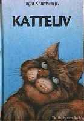

Blaasvær 1985
Innbundet, 124 s.
ISBN 82-90537-08-5
Baksidetekst
“De to kattene gjorde ingen miner til å ville avslutte kampen. Ingen ville gi seg. Hvitkatten gjorde heldig bruk av bakføttene, og fikk plassert noen fryktelige spark mot magen til Makhno. Den skitne snøen de veltet rundt i ble farget rød av blod.”
Ingar Knudtsens fortelling om katten Makhno og familien hans, er en bok for små og store kattevenner, – og kattehatere. Gjennom Makhno opplever vi et ganske alminnelig boligstrøk som et land fullt av små og store farer og eventyr. Her er slemme mennesker og snille mennesker, her er hunder og sterke katterivaler som han må kjempe imot. Og det er menneskene til Makhno, ofte snille, av og til vanskelige, og noen ganger rent ut sagt fryktelig dumme - sett med katteøyne.
Ingar nudtsen er kjent som forfatter av science-fiction romaner og noveller, deriblant ungdomsbøkene Tyrannosaurus Rex, Tova og Reisen til Jorda.
Han har vunnet litterære priser for sine fortellinger og er oversatt til flere språk.
Forfatterens kommentar
Kattehatere?! Denne boka? Det forteller i så fall noe negativt om mennesker, ikke om katter.
Denne boka kom ut på en måte som antakelig er nokså uvanlig. Den var vel i utgangspunket forut for sin tid. Noen år seinere strømmet det på med bøker med historier om katters, hunders og kaniners(!) liv. Men denne ble brutalt slengt ned i ei skuff, etter at Aschehoug greide å irritere meg mer enn jeg hadde godt av. Jeg visste at den var god nok, så hvorfor skulle jeg la meg tvinge til å gjøre den dårlig?
Men en dag ringte det på døra, og utenfor sto en gammel venn.
– Hei Ingar, jeg har startet forlag. Har du et manus til meg?
– Neei… Jo, forresten. Det har jeg så sannelig!
Katteliv ble ei god bok, og ei pen bok.
Det er dessuten ei bok der forfatteren og hans familie er sterkt tilstede.
Men om den passer for barn? Tja. Den gjør vel det?
Makhno forsvant forøvrig sporløst vinteren 1987 og i flere år etterpå håpet jeg at han skulle dukke opp igjen. Jeg minnes ham med takknemlighet for alt det han lærte meg både om det dyret som heter katt, og det dyret som heter menneske.